Civilizaciones y orígenes
Canaán, hebreos, romanos, Bizancio, islam, cruzadas y siglos de disputas religiosas y territoriales.
Ningún conflicto nace de la nada
Un recorrido histórico, riguroso y accesible por más de cuatro mil años de disputas, imperios, religiones, fronteras y heridas abiertas.
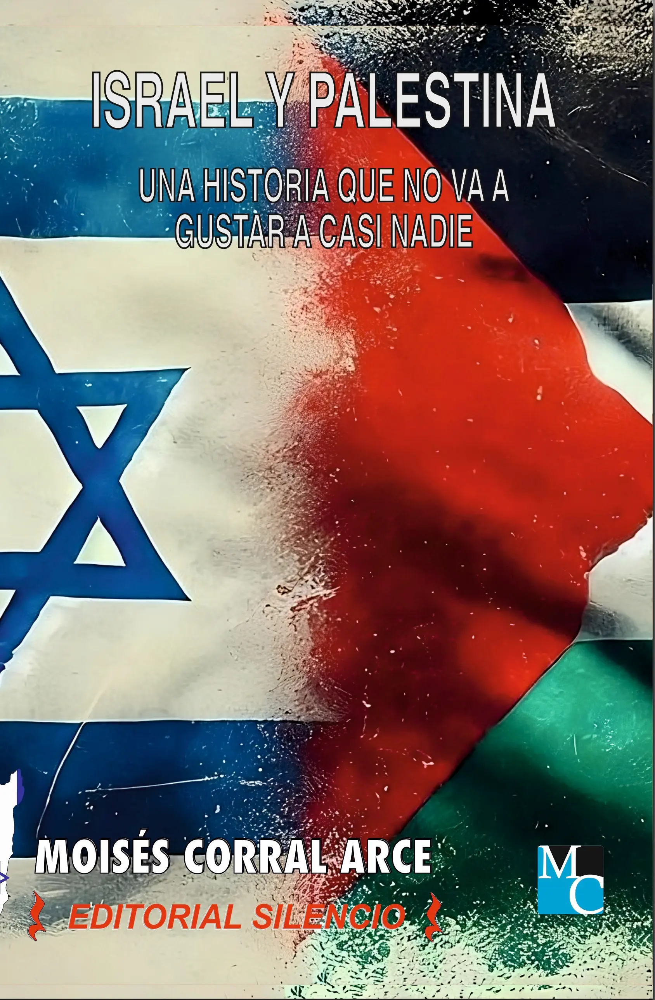
Canaán, hebreos, romanos, Bizancio, islam, cruzadas y siglos de disputas religiosas y territoriales.
Sionismo, Mandato Británico, partición de Palestina y creación del Estado de Israel.
1948, Guerra de los Seis Días, intifadas, Gaza, refugiados y lucha por el control del territorio.
Estados Unidos, Irán, ONU, Hamás, diplomacia internacional y la batalla mundial por el relato.
El libro
Este libro ofrece una inmersión profunda y detallada en el conflicto entre Israel y Palestina, explorando sus raíces históricas y los acontecimientos que han definido la región hasta la actualidad.
Con un enfoque riguroso y accesible, la obra recorre los principales hitos históricos que transformaron Oriente Medio: desde los antiguos pueblos de Canaán, los reinos hebreos y el dominio romano, hasta el surgimiento del sionismo, el Mandato Británico, la creación del Estado de Israel, las guerras árabe-israelíes, las Intifadas, Gaza y los conflictos contemporáneos.
A través de una cronología detallada, mapas, tratados, guerras y decisiones políticas clave, el libro analiza las tensiones religiosas, territoriales, sociales y geopolíticas que han marcado no solo a israelíes y palestinos, sino también al equilibrio internacional durante décadas.
Más allá de los titulares y de las narrativas simplificadas, esta obra muestra un conflicto construido durante siglos, donde las víctimas, las responsabilidades, los intereses y las memorias históricas rara vez encajan en categorías simples.
No es una historia de buenos y malos. Es la historia de cómo Oriente Medio llegó a convertirse en una de las heridas abiertas más importantes del mundo moderno.
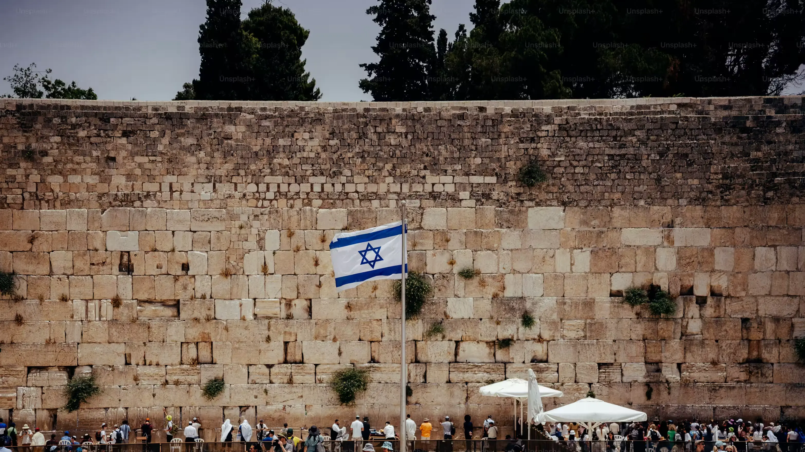
Cronología histórica


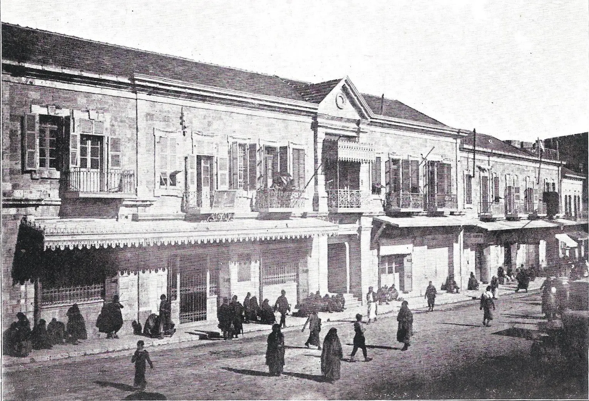
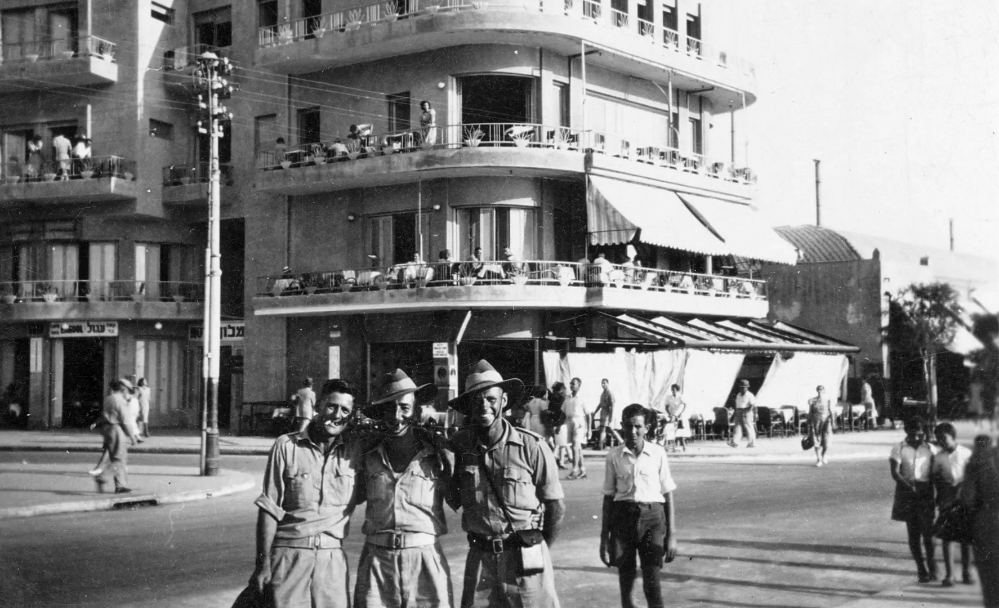


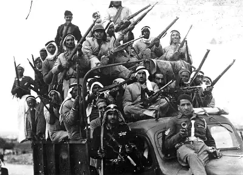

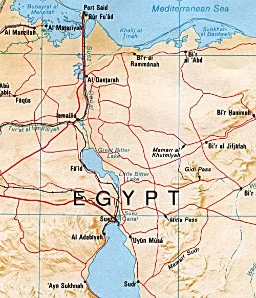


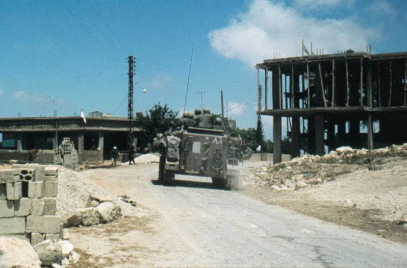
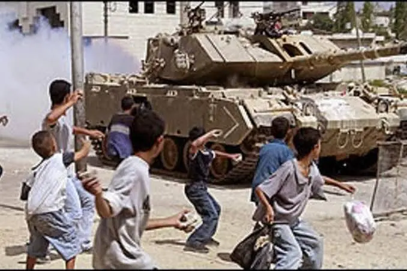


Cartografía del conflicto


Las piezas del conflicto
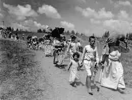
El éxodo palestino de 1948 marcó una memoria colectiva construida alrededor de la pérdida, el desplazamiento y el retorno imposible.
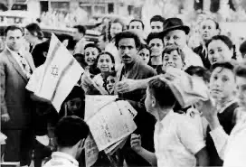
La creación del Estado alteró el equilibrio político de Oriente Medio y abrió una nueva etapa de guerras, diplomacia y disputas territoriales.

La evolución de la identidad nacional palestina entre resistencia armada, diplomacia internacional y lucha por el reconocimiento.
Del movimiento islamista surgido durante la Primera Intifada al control de Gaza y su impacto en el conflicto contemporáneo.
Un Estado marcado por la seguridad permanente, la presión internacional y profundas divisiones políticas y sociales.
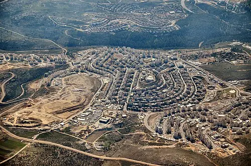
La expansión de asentamientos en Cisjordania se convirtió en uno de los puntos más controvertidos del conflicto.
Sin filtros
El conflicto entre Israel y Palestina no puede entenderse desde una sola fecha, una sola víctima, una sola frontera o una sola versión. Para comprenderlo hay que retroceder siglos, aceptar contradicciones y mirar de frente todo lo que cada relato suele omitir.
Disponible en Amazon
Un recorrido histórico, político y humano por uno de los conflictos más complejos de nuestro tiempo.
Comprar en Amazon